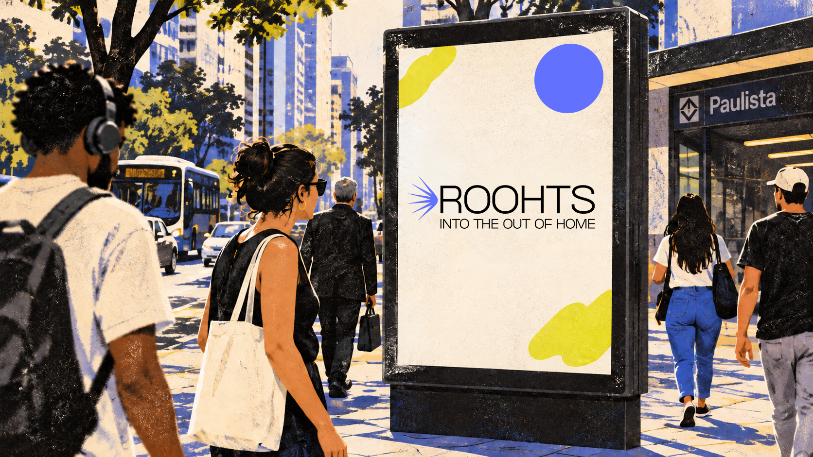
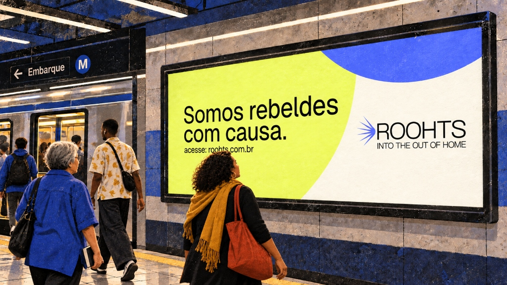
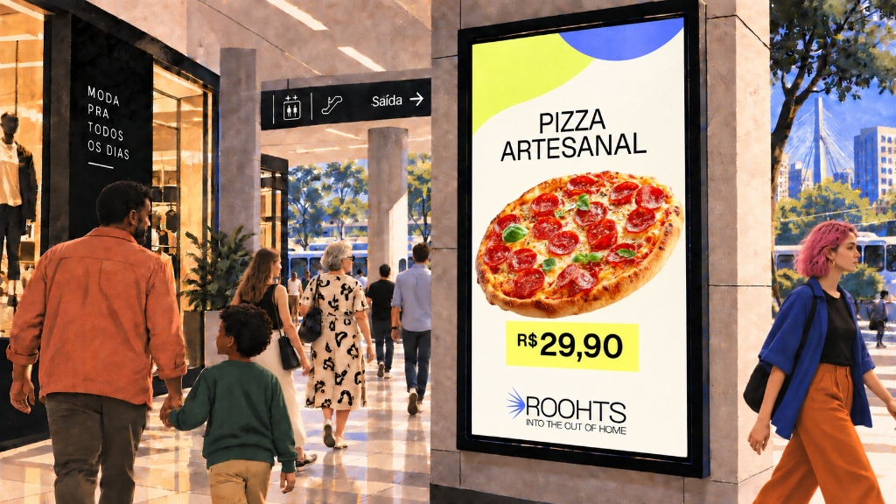

Jornada, contexto
e carga cognitiva
O contexto, o ambiente e o comportamento influenciam quanto e como
a informação pode ser processada.
Uma mensagem pode permanecer dez segundos em uma tela, mas cada pessoa a encontra de uma maneira diferente. Algumas percebem o ativo à distância. Outras cruzam com ele por poucos instantes. Há ainda quem esteja olhando naquela direção sem que a mensagem efetivamente capture sua atenção. Entre o ativo e o olhar existem movimento, distância, iluminação e concorrência visual. Também existem atenção, intenção, repertório, estado emocional e tudo o que aquela pessoa já está vivendo naquele momento.
É nesse encontro que a mensagem começa a ganhar sentido.
Compreensão em um ambiente descontrolado
O estudo “Detecting Meaning in RSVP at 13 ms per Picture”, publicado por Mary Potter em 2014, demonstrou que o sistema visual consegue reconhecer o significado de imagens apresentadas por apenas 13 milissegundos em laboratório.
Na cidade, esse primeiro relance ainda precisa atravessar movimento, distância e concorrência visual. O dado revela a velocidade do sistema visual, mas não define quanto tempo uma pessoa levará para compreender uma mensagem. Reconhecimento, leitura e construção de sentido não são a mesma coisa.
Uma imagem pode ser reconhecida em apenas 13 milissegundos. Na cidade, o movimento, distância e a concorrência visual tornam a clareza, a hierarquia e a síntese decisivas para transformar o primeiro relance em compreensão.
Mais importante do que contar elementos é entender a função de cada um dentro da mensagem.
A criação com critérios organiza possibilidades
A cidade muda com a luz, o layout também deveria. Luz natural, sombras, reflexos, iluminação artificial e o brilho do entorno alteram a maneira como cores, formas e textos são percebidos.
Pensar em dia e noite não significa simplesmente criar uma versão clara e outra escura. Significa entender como a mensagem se comporta diante de diferentes condições de luminância, concorrência visual e condição de cada ativo.
Light Mode
Durante o dia, um ativo de OOH pode disputar atenção com pessoas, carros, ônibus, vegetação, prédios, sinalizações, cores, texturas, tudo o que já ocupa naturalmente uma cidade.
A incidência intensa de sol ou chuva, reflexos e sombras, pode prejudicar a visibilidade, alterar a percepção das cores e reduzir a legibilidade. Nesse contexto, a atenção ao contraste precisa ser ainda maior.
Dark Mode
À noite, o contraste entre o ativo iluminado e a cidade mais escura pode favorecer o destaque da mensagem e reduzir parte da concorrência visual. Ainda assim, permanecem os cuidados com contraste, cores e legibilidade.
Uma tela com brilho excessivo pode provocar ofuscamento e comprometer a leitura, mesmo quando o ativo parece mais evidente.
O estudo de Nelson Cowan, publicado em 2001, reúne evidências de que nossa capacidade ativa de processamento opera, sob determinadas condições, com cerca de quatro unidades significativas (chunks). Essas unidades não correspondem diretamente ao número de elementos presentes em um layout, não sendo esse número tratado como um limite universal para OOH. Ele ajuda a lembrar que elementos relacionados podem ser percebidos como um único agrupamento, enquanto uma composição desorganizada pode fragmentar a atenção.
Nem todas essas variáveis podem ser controladas. Ainda assim, a criação pode ampliar as possibilidades de compreensão ao estabelecer critérios e combinar síntese visual
e verbal, signos, símbolos e elementos reconhecíveis.
Quanto mais coerente for a relação entre imagem, texto e contexto, mais evidente se torna a intenção da mensagem. Isso reduz o esforço necessário para compreendê-la e contribui para campanhas mais eficientes e autênticas.
A hierarquia visual e o objetivo de comunicação determinam o que assume protagonismo na peça, Área Hero, e o que orienta a percepção da audiência.
Uma peça pode reunir vários elementos como: título, logotipo, imagem, vídeo, texturas, cores, mas o olhar não encontra tudo ao mesmo tempo, nem atribui a mesma importância a cada um deles. Posição, escala, contraste, agrupamento e espaços, criam diferentes relações. Essas relações oferecem um ponto de entrada, conectam os conteúdos e constroem um percurso possível.
No OOH, essa organização precisa continuar reconhecível à distância, em movimento e dentro do tempo real de exposição, em sua maioria, os clássicos 10 segundos.
A mensagem encontra a audiência quando a composição deixa claro o que merece atenção.
O olhar organiza antes de interpretar
No estudo “A Century of Gestalt Psychology in Visual Perception”, publicado em 2012, Johan Wagemans revisita princípios clássicos da Gestalt para mostrar como o sistema visual agrupa informações por proximidade, similaridade, continuidade e relação entre figura e fundo.
Mais de uma década depois, Jiayang Ma parte desses mesmos fundamentos para investigar sua aplicação na organização hierárquica de informações. Seu estudo “A Study on Perceptual Design of Hierarchical Graphic Information in Interfaces Based on Gestalt Principles”, publicado em 2025, amplia essa discussão ao observar como escala, distância e agrupamento atuam conjuntamente na percepção das prioridades visuais.
Um título grande pode perder força diante de uma imagem mais contrastante. Um produto pode ganhar destaque pelo espaço ao redor. Informações menores podem ser percebidas como uma unidade quando permanecem visualmente conectadas.
O protagonismo nasce da relação entre as partes, não do tamanho isolado de uma delas.
Contraste bom é design inclusivo
Diferentes intenções,
diferentes protagonistas
Como a Área Hero conduz a composição do layout
Definida a Área Hero, o restante da composição passa a responder a ela. No estudo “Visual Hierarchy and Viewing Behavior: An Eye Tracking Study”, publicado em 2011, Soussan Djamasbi observou que hierarquias mais claras favorecem padrões de visualização mais organizados e orientam a distribuição da atenção.
Levando esse princípio para o OOH e somando o que observamos nos diferentes contextos da cidade, destacar a marca favorece o reconhecimento; colocar o conceito em primeiro plano abre uma narrativa; dar protagonismo ao produto pode apoiar sua apresentação, seu lançamento ou uma decisão mais imediata de compra; enquanto destacar a chamada orienta o público para uma ação.
O destaque visual da forma à intenção
Área Hero
A Área Hero é a região de maior destaque visual do layout e funciona como a principal porta de entrada para a compreensão da mensagem. Sua construção considera o sentido de leitura da audiência, sua posição em relação ao ativo e o fluxo do entorno.
É a partir desse ponto de vista, combinado ao objetivo de comunicação, que se define qual elemento ocupará esse espaço. Por isso, a Área Hero não pertence automaticamente à imagem, ao texto, ao vídeo ou ao logotipo.
Não se trata de controlar o olhar, mas orientá-lo para tornar a intenção criativa mais evidente.
Tipografia,
legibilidade e escala
A distância, o tamanho das letras e o tempo de contato influenciam se um texto poderá ser lido pela audiência.
Já passou por uma campanha nas ruas e não conseguiu ler o que estava escrito? Muitas vezes, o texto está adequado dentro do layout e na tela do computador, mas não para a distância e o tempo em que será encontrado no ambiente real.
No OOH, o tamanho das letras precisa responder ao ativo, momento e contexto. Um texto visto de perto durante uma espera permite uma escala diferente daquele percebido de longe ou em movimento. Ângulo de visão, contraste e posição do ativo também mudam essa relação.
Por isso, não existe um tamanho que funcione da mesma maneira em todos os formatos. A tipografia precisa ser dimensionada a partir das condições reais em que a audiência encontrará a mensagem.
Por isso, não existe um tamanho que funcione da mesma maneira em todos os formatos. A tipografia precisa ser dimensionada a partir das condições reais em que a audiência encontrará a mensagem.
O tamanho começa pelo contexto
Espessura, proporção, espaçamento e desenho das letras também ajudam a distinguir os caracteres e reconhecer as palavras.
A DIN 1450, norma alemã dedicada à legibilidade, reúne critérios para o desenho, o espaçamento e a proporção das letras. A ADA, legislação norte-americana de acessibilidade aplicada também à sinalização visual, permite textos em caixa alta, caixa baixa ou uma combinação das duas. Em todos os casos, recomenda caracteres com formas convencionais e fáceis de identificar.
No estudo Letter Case and Text Legibility in Normal and Low Vision (2007), Arditi e Cho observaram que, quando um texto é visto muito pequeno, como pode acontecer à distância, palavras em caixa alta podem ser mais fáceis de identificar. A vantagem desapareceu na velocidade de leitura quando as letras eram suficientemente grandes.
Para OOH, a pergunta deixa de ser apenas “caixa alta ou baixa?” e passa a ser: a mensagem continua legível na distância real de contato com o ativo?
O texto não pode desaparecer no caminho
Ao aplicar um gradiente ao texto, a cor varia ao longo das letras. Com isso, alguns trechos podem se aproximar da cor do fundo e desaparecer, dificultando o reconhecimento da palavra como um todo.
A WCAG 2.2 orienta que, nesses casos, a verificação considere o trecho de menor contraste, e não uma média entre as cores. Como essa relação pode mudar ao longo de uma mesma palavra, o uso de gradientes na tipografia não é indicado para DOOH.
Parado na tela, um texto com gradiente pode parecer legível. Na rua, visto em movimento, trechos de menor contraste podem desaparecer antes que a palavra seja reconhecida.
Mais inclinação, menos compreensão
Fotografia
(imagens e vídeos)
A escolha das imagens, vídeos, suas cores e enquadramentos, constroem conexões, despertam reconhecimento e participam da compreensão de uma campanha de forma direta.
Uma imagem tem força para chamar a atenção antes mesmo que a mensagem seja interpretada. Cor, saturação, contraste, escala e enquadramento determinam o que se destaca e quanto da cena pode ser reconhecido em poucos segundos.
Em contextos de maior velocidade, imagens mais diretas, cores mais saturadas e enquadramentos próximos, como o close-up, potencializam a presença de rostos, produtos e detalhes importantes. Já em momentos de espera ou permanência, a cena pode se abrir para incluir o ambiente e construir uma narrativa com mais contexto.
Não existe um enquadramento único para todos os ativos. A imagem precisa responder ao tempo e à forma como será encontrada pela audiência.
Quanto mais breve o encontro, mais direta precisa ser a imagem. Quanto maior
a permanência, mais contexto ela pode revelar.
A fotografia não mostra apenas o que a marca vende. Ela pode mostrar o que a marca significa.
O olhar encontra outros olhares
Rostos estabelecem uma conexão rápida com a audiência, mas sua presença não garante que os demais elementos da peça também serão percebidos. A direção do olhar da pessoa na peça interfere na forma como a atenção se distribui dentro da composição.
No estudo “The Influence of Banner Advertisements on Attention and Memory”, publicado em 2014, Pitch Sajjacholapunt e Linden Ball acompanharam os movimentos dos olhos diante de anúncios digitais. Quando o rosto olhava diretamente para a audiência, a atenção se concentrava mais nele. Quando seu olhar apontava para o texto ou para o produto, a atenção também seguia nessa direção, favorecendo a memorização desses conteúdos. Esse efeito é conhecido como gaze cueing.
Uma imagem pode condensar uma ideia
Um rosto, um gesto ou um produto em cena podem expressar uma atitude, uma situação ou o lugar que a marca deseja ocupar. Em Thinking Into It: Consumer Interpretation of Complex Advertising Images (1997), Barbara J. Phillips investigou como as pessoas interpretam anúncios com metáforas visuais a partir de referências que já conhecem.
Algumas interpretações foram compartilhadas pelos participantes e se aproximaram da intenção de quem criou os anúncios. Outras variaram de pessoa para pessoa. Para construir esses sentidos, os participantes recorreram ao que sabiam sobre cultura, produtos e publicidade.
A imagem, portanto, pode sugerir uma mensagem sem escrevê-la, mas o significado pretendido pela direção de arte nem sempre será o significado percebido pelo público.
Para o OOH, a síntese visual está em escolher uma cena cujo significado possa ser percebido rapidamente e associado à marca. Quando a fotografia exige que a audiência procure o assunto, relacione muitos elementos ou decifre uma metáfora complexa, aumenta a carga cognitiva. A imagem precisa oferecer informação suficiente para que a ideia chegue no tempo de contato com a peça.
O fluxo, a velocidade e o tempo de permanência da audiência orientam a complexidade do movimento e a quantidade de etapas da narrativa de uma animação.
O movimento pode destacar uma informação, apresentar um produto ou construir uma narrativa. Mas acrescentar animações, transições e steps não torna necessariamente uma peça mais eficiente.
Em ambientes de maior fluxo e velocidade, a audiência dispõe de menos tempo para acompanhar mudanças. Por isso, a animação precisa ser mais objetiva, com movimentos diretos, ritmo desacelerado e poucas etapas.
Em contextos de circulação moderada, a peça pode combinar movimentos em 2D ou 3D e desenvolver uma sequência um pouco mais ampla. Já em situações de espera ou permanência, existe espaço para animações mais complexas e narrativas construídas em mais etapas.
Quanto maior a velocidade da audiência, mais simples deve ser a animação e menor o número de steps da peça.
Mais movimento não significa mais atenção. Uma animação sutil pode conduzir o olhar e dar força à mensagem sem disputar atenção com ela.
O movimento certo para cada encontro
O estudo “Science in Motion”, publicado pela Vistar Media em parceria com Omnicom Media e JCDecaux em 2026, comparou criativos estáticos, motion limitado, full motion e 3D em DOOH.
Realizada com 7.513 participantes em ambiente simulado, a pesquisa indica que a presença de movimento pode ampliar o recall e o reconhecimento de marca. Os resultados também mostram que maior complexidade não significa necessariamente maior eficácia, pois movimentos sutis podem apresentar bom desempenho quando associados a objetivos claros de comunicação.
A escolha do movimento exige sensibilidade. Um ciclo de 10 segundos não garante que o público verá a animação inteira, e um movimento familiar à marca em outras mídias pode não funcionar da mesma forma no OOH. É preciso ajustar ritmo, duração e complexidade ao tempo real de contato, preservando o que torna a marca reconhecível.
O objetivo define o que a mensagem busca provocar e conecta as decisões criativas à resposta esperada da audiência.
Uma campanha pode fortalecer o reconhecimento de uma marca, apresentar uma ideia, destacar uma oferta ou orientar uma ação. Antes de definir seus elementos, é preciso deixar claro qual resultado a comunicação pretende alcançar e no OOH não é diferente.
O objetivo não descreve apenas o que estará presente na peça. Ele estabelece o que a audiência deve perceber, compreender ou fazer depois do contato com a mensagem.
Essa definição orienta escolhas de imagem, texto, cor, escala, movimento e quantidade
de informações.
Um objetivo claro transforma escolhas visuais em direção.
Quando diferentes intenções disputam o mesmo espaço, a comunicação perde clareza e dificulta a compreensão da audiência.
A intenção encontra o público
As práticas da Geopath, organização norte-americana especializada na mensuração de audiência em OOH, recomendam que as campanhas partam de objetivos definidos e relacionados à audiência, ao contexto de exposição e aos indicadores de desempenho.
Essa relação também aparece no estudo PULSE, realizado pela Bauer Media Outdoor em parceria com a Kantar, com 1.350 participantes. Na pesquisa, 64% dos entrevistados consideraram úteis anúncios relacionados ao local. Os resultados também apontam que relevância e criatividade influenciam a atenção, a apreciação e a resposta ao DOOH.
Uma mensagem sobre mobilidade próxima a uma estação, uma orientação relacionada ao entorno ou uma oferta conectada ao momento da jornada não utilizam o contexto apenas como cenário. Elas criam uma relação mais direta entre o objetivo da campanha e a situação vivida pela audiência.
Contexto, hierarquia, grid, contraste, tipografia, imagem e movimento não funcionam como decisões isoladas. Cada critério contribui para aproximar o objetivo da campanha das condições reais em que a mensagem será encontrada.
A criação continua aberta a diferentes linguagens e possibilidades. O que muda é a capacidade de fazer escolhas conscientes, observar seus efeitos, transformar cada campanha em aprendizado para a próxima.



Reconhecimento
A marca ganha a Área Hero. Conceito, mensagem, imagem ou vídeo entram para ampliar sua presença.
Conceito
Comunicar uma ideia ou um posicionamento, o título assume a Área Hero.
Oferta
Apresentar uma oferta, o produto, imagem ou vídeo ocupam a Área Hero. Título com a condição comercial tornam a proposta mais clara.
Ação
Provocar uma resposta, a instrução assume a Área Hero. As informações de apoio mostram onde, como ou quando agir.
A Área Hero define o primeiro olhar. Quando marca, conceito, produto ou chamada ganha protagonismo, a composição organiza a atenção em torno do que
a campanha precisa comunicar.
Depois que o objetivo de comunicação define o que assume protagonismo, o grid ajuda a dimensionar e posicionar a Área Hero. Os demais conteúdos se organizam a partir dela, mantendo conexão com a hierarquia proposta.
Essas possibilidades não são modelos rígidos, mas pontos de partida para organizar a composição.
Cada escolha dentro do sistema visual contribui para aproximar a composição de seu objetivo de comunicação. Assim, o layout deixa de ser uma reunião de elementos isolados e passa a funcionar como uma unidade, construindo uma expressão própria, reconhecível e memorável para a marca.
A cor pode carregar identidade, significado e códigos próprios de uma marca.
Mas esse valor só se realiza na comunicação quando as relações visuais também
tornam perceptíveis seus demais elementos e signos.
Visibilidade e expressão de marca não são decisões separadas. A primeira cria as condições para que a segunda aconteça.
A tipografia constrói identidade, organiza a mensagem e define o tom da comunicação. Para cumprir essas funções no OOH, precisa permanecer reconhecível à distância, em movimento e sob diferentes condições de exposição.
Dimensionar, alinhar, colorir e posicionar o texto são partes de uma mesma decisão: fazer com que a mensagem preserve sua forma e sua intenção quando ocupar a cidade
e encontrar seu público.
Cores, contraste e acessibilidade
A relação entre cores, contraste e condições de exposição determina se os elementos do layout podem ser percebidos e compreendidos pela audiência.
Uma combinação pode parecer precisa na tela do computador e desaparecer em um relógio de rua digital diante do sol, dos reflexos ou da luz do entorno. O contraste não vive apenas entre duas cores. Ele acontece entre mensagem, suporte, ambiente e olhar.
Com a expansão e a digitalização do OOH, o meio passa a incorporar processos e critérios próprios do design digital, desenvolvidos para ampliar a acessibilidade da comunicação.
Entre as principais referências está a WCAG 2.2, criada pelo W3C. Suas diretrizes estabelecem relações mínimas de contraste entre texto e fundo: 4,5:1 para textos regulares e 3:1 para textos grandes no nível AA; 7:1 e 4,5:1 no nível AAA.
Medir o contraste permite detectar combinações que podem dificultar a leitura ainda na criação. O resultado orienta as escolhas do layout, mas não prevê, sozinho, como a peça será percebida.
O contraste deixa de depender apenas da avaliação visual e passa a contar também com critérios mensuráveis antes de o layout chegar às cidades.
Uma cor nunca aparece sozinha
No estudo “The Effects of Luminance Contrast, Colour Combinations, Font, and Search Time on Brand Icon Legibility”, publicado em 2017, Ya-Hsien Ko realizou uma pesquisa com ícones de marca exibidos em uma tela de computador. Os participantes precisavam localizar e reconhecer os ícones em diferentes combinações de cores, níveis de contraste de luminância, fontes e tempos de busca.
Entre as combinações avaliadas, amarelo sobre preto, amarelo sobre azul e branco sobre azul apresentaram os melhores resultados de legibilidade. O contraste de 18:1 teve o melhor desempenho entre os níveis testados, Arial foi mais legível que Times New Roman e, quando tiveram mais tempo para procurar os ícones, os participantes conseguiram identificá-los com maior precisão.
A legibilidade não depende só de um índice de contraste. A combinação das cores e a escolha da fonte também fazem diferença. E, como vimos ao falar de carga cognitiva, o tempo disponível para encontrar e reconhecer a informação interfere na compreensão da mensagem.
Pessoas com baixa visão podem encontrar maior dificuldade para distinguir elementos com pouca diferença de luminância. Diferentes tipos de daltonismo também podem aproximar cores que, para outras pessoas, parecem claramente separadas.
Por isso, uma mensagem não deve depender exclusivamente da cor para ser compreendida. Textos legíveis e dimensionados para o contexto, imagens claras, ícones, símbolos, formas e outros elementos reconhecíveis da marca criam diferentes caminhos para identificar o conteúdo.
A cor constrói identidade, mas o acesso à mensagem não deve depender somente dela.
Simule diferentes formas de percepção das cores:
Adobe Color — Ferramentas de acessibilidade
A inclinação pode contribuir para a expressão visual, mas também muda a forma como uma palavra é percebida. No estudo “Reading Sentences of Words With Rotated Letters”, publicado em 2019, Barbara J. Juhasz e outros pesquisadores observaram o movimento dos olhos durante a leitura de frases em inglês.
Quanto maior a rotação das letras, maior a interferência na leitura. O efeito era ainda mais evidente quando as letras de uma mesma palavra seguiam inclinações diferentes, quebrando sua continuidade visual.
No ambiente veloz e pouco controlado das cidades, palavras ou letras anguladas exigem mais tempo e esforço para serem reconhecidas, aumentando o risco de a mensagem não ser identificada durante o período de exposição.
Por isso para o OOH, prefira textos alinhados a esquerda ou centro sem inclinação.